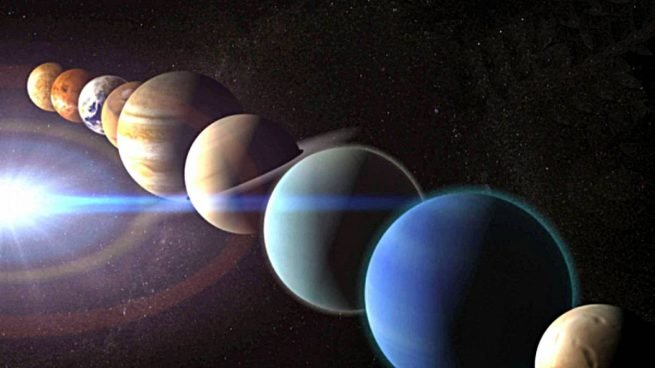
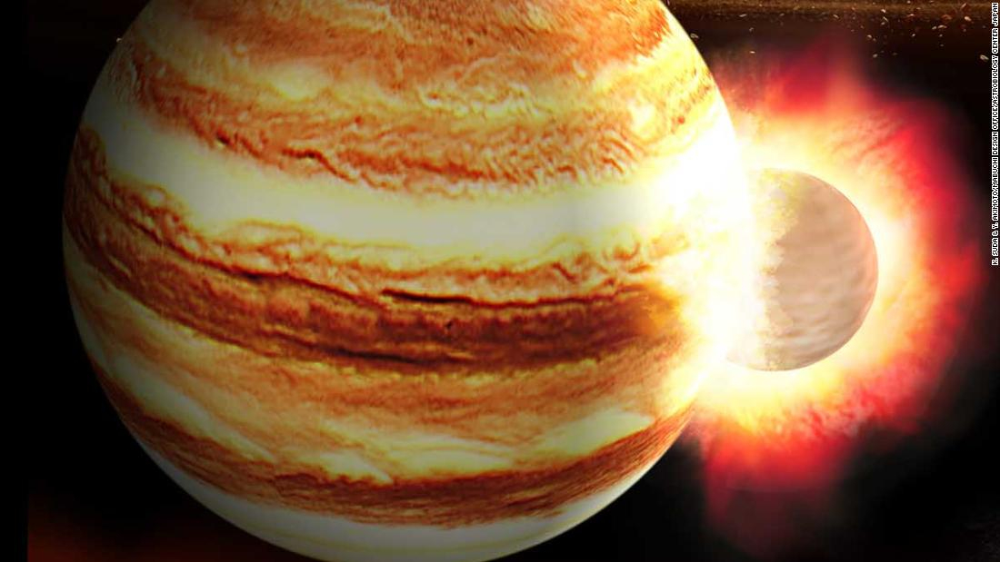

</head>
<body>
<body background="fondo.jpg">


<FONT FACE="Arial"><FONT COLOR="White">
<H3>
<ol>
<FONT FACE="Arial">
<li><a href="#Tierra:">Tierra.</a></li>
<p>
<li><a href="#Jupiter:">Jupiter</a></li>
</H3>
<div align="center"></div>
<ol>
<FONT FACE="Arial"><FONT COLOR="green">


<hr size="6px" color="red" />

<li><a name="Tierra:"><font size="3">Tierra.</A></A></FONT></FONT></li><P ALIGN="justify"><FONT FACE="Arial"><font size="3">
<P ALIGN="justify">La Tierra (del latín Terra,17​ deidad romana equivalente a Gea, diosa griega de la feminidad y la fecundidad) es un planeta del sistema solar que gira alrededor de su estrella —el Sol— en la tercera órbita más interna. Es el más denso y el quinto mayor de los ocho planetas del sistema solar. También es el mayor de los cuatro terrestres o rocosos.
La Tierra se formó hace aproximadamente 4550 millones de años y la vida surgió unos mil millones de años después.18​ Es el hogar de millones de especies, incluidos los seres humanos y actualmente el único cuerpo astronómico donde se conoce la existencia de vida.19​ La atmósfera y otras condiciones abióticas han sido alteradas significativamente por la biosfera del planeta, favoreciendo la proliferación de organismos aerobios, así como la formación de una capa de ozono que junto con el campo magnético terrestre bloquean la radiación solar dañina, permitiendo así la vida en la Tierra.20​ Las propiedades físicas de la Tierra, la historia geológica y su órbita han permitido que la vida siga existiendo. Se estima que el planeta seguirá siendo capaz de sustentar vida durante otros 500 millones de años, ya que según las previsiones actuales, pasado ese tiempo la creciente luminosidad del Sol terminará causando la extinción de la biosfera.

</P ALIGN="justify">
</H3>
<p>
<h3>
<P ALIGN="right">
<a href="#"Tierra:"><button>Inicio</button></a>
</P ALIGN="right">
</h3>
<p>

<hr size="6px" color="red" />

<FONT FACE="Arial"><FONT COLOR="green">

<li><a name="Jupiter:">Jupiter.</A></A></FONT></FONT></li><P ALIGN="justify"><FONT FACE="Arial"><font size="3">
<P ALIGN="justify">Júpiter es el quinto planeta del sistema solar. Forma parte de los denominados planetas exteriores o gaseosos. Recibe su nombre del dios romano Júpiter (Zeus en la mitología griega).
Se trata del planeta que ofrece un mayor brillo a lo largo del año dependiendo de su fase. Es, además, después del Sol, el mayor cuerpo celeste del sistema solar, con una masa casi dos veces y media la de los demás planetas juntos (con una masa 318 veces mayor que la de la Tierra y tres veces mayor que la de Saturno, además de ser, en cuanto a volumen, 1317 veces más grande que la Tierra). También es el planeta más antiguo del sistema solar, siendo incluso más antiguo que el sol; este descubrimiento fue realizado por investigadores de la universidad de Münster en Alemania.3​ 4​
Júpiter es un cuerpo masivo gaseoso, formado principalmente por hidrógeno y helio, carente de una superficie interior definida. Entre los detalles atmosféricos es notable la Gran Mancha Roja (un enorme anticiclón situado en las latitudes tropicales del hemisferio sur), la estructura de nubes en bandas oscuras y zonas brillantes, y la dinámica atmosférica global determinada por intensos vientos zonales alternantes en latitud y con velocidades de hasta 140 m/s (504 km/h).

</P ALIGN="justify">
</H3>
<p>
<H3>
<P ALIGN="right">
<a href="#"jupiter:"><button>Inicio</button></a>
</P ALIGN="right">
</h3>
<p>

</body>
</html>